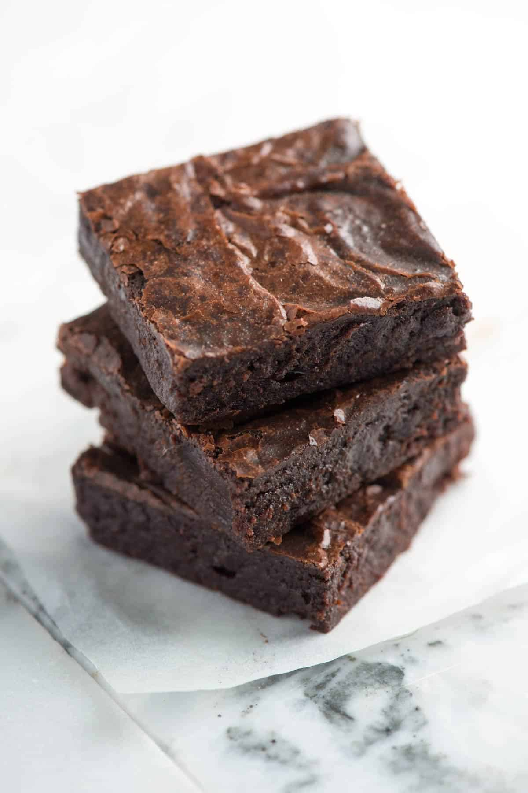

Brownies

Description
A great, last minute recipe when you have to whip up a batch of baked treats with what you have in the cupboard.
Incredients
- ¾ cup (180ml) vegetable oil
- 1 ½ cup (375ml) SPAR white sugar or SPAR castor sugar
- 1 teaspoon (5ml) vanilla extract
- 3 eggs
- ¾ cup (180ml) SPAR Cake Wheat flour
- ½ cup (125ml) unsweetened cocoa powder
- ½ teaspoon (3ml) baking powder
- ¼ teaspoon salt
Steps
- Preheat oven to 175 degrees C.
- Grease a small brownie tin (about 22cm x 20cm)
- Mix together the oil, sugar, and vanilla and eggs.
- Mix the flour, cocoa, baking powder, and salt; gradually stir into the egg mixture until well blended.
- Spread the batter evenly into the prepared pan.
- Bake for 20 to 25 minutes, or until the brownie begins to pull away from edges of pan.
- Let cool on a wire rack before cutting into squares.
Home